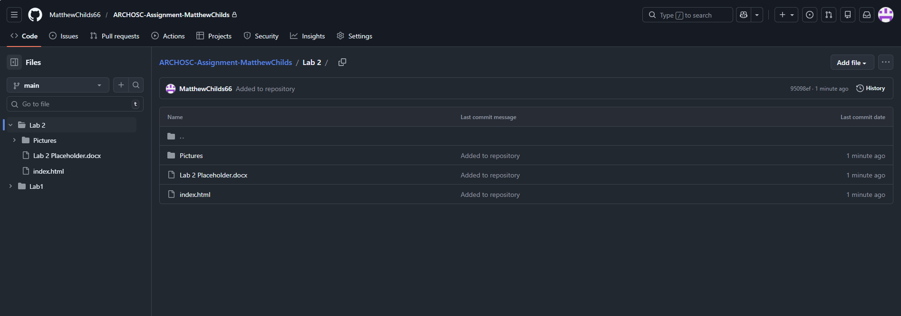

I have created a folder named ‘ArchOS Assignment’ inside my workspace folder. Within this folder I have created another folder named ‘Pictures’, in which I will save all my screenshots of the work I do throughout these lab sessions. I started by saving a screenshot of my ‘ArchOS Assignment’ folder in the ‘Pictures’ folder.

I then opened the Windows Terminal in the workspace folder and used the ‘git init’ command to create a new empty git repository.

Then I created a new repository on GitHub and named it ‘ARCHOSC-Assignment-MatthewChilds’. Within this repository I have saved my work from the first lab session.

Next, I used the Terminal to create a link between my local repository and my GitHub repository. I entered a link to my GitHub repository to tell git which repository I want to be linked to and then pulled the information from the GitHub repository so I could then link the two repositories together.

I then opened Visual Studio Code and created a new text file called ‘index.html’. I could then paste in some code that I created in the first lab session that creates a very basic website.

All the files within my local repository are untracked, meaning that git will be unable to manage these files. I used the command ‘git add .’ to tell git that I want to add all these untracked files into the repository and then committed them, so they are saved to the repository.

I then pushed the local repository to GitHub. In order to do this I first had to ensure that the local repository matched with GitHub structure, and then I was able to push all the files within the local repository into the GitHub repository.
I then hosted the website that I made onto GitHub pages. To do this I had to make my GitHub repository public so I had access to GitHub pages, and then I selected the branch as ‘main’ which then allowed me to view the website on the GitHub repository.
 Show page 1
Show page 1